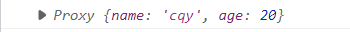

Vue3源码 Vue3设计思路 Vue3相对于Vue2更加注重模块的拆分，模块可以单独使用。在2.0中无法单独使用部分模板，只能引入整个Vuejs。
Vue3响应式原理 Vue2使用defineProperty进行数据劫持，要重写属性的getter和setter，性能比较差。而且在新增属性和删除属性时无法监视（需通过$set、$delete实现）
Vue2采用OptionsAPI，给用户提供data、props、methods、computed等属性，在复杂的业务逻辑下会导致混乱this访问，this存在指向问题
Vue2中很多未被使用的属性和方法依然会被打包，而Vue3使用的CompositionAPI对tree-shaking更加友好，代码容易压缩
Vue3使用Proxy进行响应式数据变化
响应式中有许多api，但大多数基于reactive的实现，reactive用于将对象转化为响应式
Proxy的一些知识
Proxy可以理解成在目标对象前的一层拦截，当要访问目标对象时，必须先通过这一层拦截。
语法：
1 let proxy = new Proxy (target, handler)
target就是要被代理的目标对象，handler也是一个对象，它可以配置一系列拦截操作
拦截操作有许多，这里主要使用get（外界访问目标对象属性时拦截）和set（外界修改目标对象属性时拦截）get方法参数：目标对象（target）、目标对象的某个属性（key）、代理对象本身（receiver）set方法参数：目标对象（target）、目标对象的某个属性（key）、新值（value）、代理对象本身（receiver）
判断是否为对象的工具函数
1 2 3 const isObject = (value: any ) => { return typeof value === 'object' && value !== null ; }
初步实现reactive
reactive只对对象进行代理，在传入参数时要判断是否为一个对象
1 2 3 4 5 6 7 8 9 10 11 12 13 14 15 16 17 18 export function reactive (target ) { if (!isObject (target)) { return } const proxy = new Proxy (target, { get (target, key, receiver ) { return target[key] }, set (target, key, value, receiver ) { target[key] = value } }) return proxy }
测试
1 let person = reactive ({ name : 'cqy' , age : 20 })

存在的问题
当目标对象有属性访问器，并且通过属性访问器访问属性时，就无法监测到。
1 2 3 4 5 6 7 8 9 let person = { name : 'cqy' , get getName () { return this .name } } let proxy = reactive (person)proxy.getName
因为当用属性访问器访问属性时，走的是this.xxx，而this指向的是对象本身。
解决方法
在es6中新增的apiReflect就是为了操作对象的，而且它可以和Proxy很好的配合，Reflect对象的方法与Proxy对象的方法一一对应。this指向。
1 2 3 4 5 6 7 8 9 10 11 12 13 14 15 16 17 export function reactive (target ) { if (!isObject (target)) { return } const proxy = new Proxy (target, { get (target, key, receiver ) { return Reflect .get (target, key, receiver) }, set (target, key, value, receiver ) { return Reflect .set (target, key, value, receiver) } }) return proxy }
同一个对象重复代理问题
1 2 3 let person = { name : 'cqy' }let person1 = reactive (person)let person2 = reactive (person)
上述代码就是对同一个对象的重复代理，我们需要修改代码使同一个对象只代理一次
解决方案：将目标对象和代理对象以键值对的形式存入map缓存，在代理前判断map中是否已存在
1 2 3 4 5 6 7 8 9 10 11 12 13 14 15 16 17 18 19 20 21 22 23 24 let reactiveMap = new WeakMap ()export function reactive (target ) { if (!isObject (target)) { return } let existingProxy = reactiveMap.get (target) if (existingProxy) { return existingProxy } const proxy = new Proxy (target, { get (target, key, receiver ) { return Reflect .get (target, key, receiver) }, set (target, key, value, receiver ) { return Reflect .set (target, key, value, receiver) } }) reactiveMap.set (target, proxy) return proxy }
代理对象再进行代理问题
1 2 3 let data = {name : 'cqy' }let person = reactive (data)let perosn2 = reactive (person)
上面的代码中，person已经是一个代理对象了，然后对他又进行了代理。这显然是没有必要的。
解决方案：设置标识，当一个代理对象被再次代理时，直接返回这个代理对象
1 2 3 4 5 6 7 8 9 10 11 12 13 14 15 16 17 18 19 20 21 22 23 24 25 26 27 28 29 30 31 32 33 34 35 36 let reactiveMap = new WeakMap ()const enum ReactiveFlags { IS_REACTIVE = '__v_isReactive' } export function reactive (target ) { if (!isObject (target)) { return } if (target[ReactiveFlags .IS_REACTIVE ]) { return target } let existingProxy = reactiveMap.get (target) if (existingProxy) { return existingProxy } const proxy = new Proxy (target, { get (target, key, receiver ) { if (key === ReactiveFlags .IS_REACTIVE ) { return true } return Reflect .get (target, key, receiver) }, set (target, key, value, receiver ) { return Reflect .set (target, key, value, receiver) } }) reactiveMap.set (target, proxy) return proxy }
上述代码解释：
当目标对象第一次被代理时，(1)、(2)处代码均不执行
当一个代理对象被传入时，因为它是代理对象，所以当(1)处试图访问target[ReactiveFlags.IS_REACTIVE]这个属性时，就会触发get，ReactiveFlags.IS_REACTIVE，然后在(2)处返回true，(1)处if判断成立，直接返回这个代理对象
注意点：并不是给代理对象添加了一个ReactiveFlags.IS_REACTIVE标识，并且我们也不关心这个属性值是多少。这个标识的存在只是为了触发代理对象的get
也就是说通过是否有get方法来区分目标对象和代理对象
深度代理
1 2 3 4 5 6 7 8 9 10 11 12 13 14 15 16 17 18 19 20 21 22 23 24 25 26 27 28 29 30 31 32 33 34 35 36 37 38 export function reactive (target ) { if (!isObject (target)) { return } if (target[ReactiveFlags .IS_REACTIVE ]) { return target } let existingProxy = reactiveMap.get (target) if (existingProxy) { return existingProxy } const proxy = new Proxy (target, { get (target, key, receiver ) { if (key === ReactiveFlags .IS_REACTIVE ) { return true } track (target, 'get' , key) let res = Reflect .get (target, key, receiver) if (isObject (res)) { return reactive (res) } return res }, set (target, key, value, receiver ) { let oldValue = target[key] let res = Reflect .set (target, key, value, receiver) if (value != oldValue) { trigger (target, 'set' , key, value, oldValue) } return res } }) reactiveMap.set (target, proxy) return proxy }
依赖收集 Vue3中还定义了effectapi，当effect函数依赖的数据发生改变时，会再次渲染
1 2 3 4 5 6 7 let person = reactive ({ name : 'cqy' , age : 20 })effect (() => { let app = document .getElementById ('app' ) app.innerHTML = person.name + ' ' + person.age })
effect函数通过实例化ReactiveEffect类来实现功能，类方法run会执行传入的函数来将数据渲染到网页上
1 2 3 4 5 6 7 8 9 10 11 12 13 14 15 16 17 18 19 20 21 22 23 24 25 26 let activeEffect = undefined class ReactiveEffect { public active = true constructor (public fn run ( if (!this .active ) { this .fn () } try { activeEffect = this ; return this .fn (); }finally { activeEffect = undefined } } } export function effect (fn ) { const _effect = new ReactiveEffect (fn); _effect.run (); }
依赖收集
当数据发生变化，就要重新渲染页面。就需要将属性和effect关联起来
思路：
因为我们的数据是响应式的，所有当fn函数访问数据时，会触发get，所以我们要在get中进行依赖收集
一个effect可能对应着多个属性，一个属性也可能被多个effect所使用。
为了将effect与属性关联起来，首先让目标对象对应一个map集合。在这个map集合中，以需要被依赖收集的属性为键，Set集合为值组成。Set中又存放了依赖此属性的effect（实现属性 -> effect的关联）
在ReactiveSffect类中定义一个数组来存放这个effect实例依赖的属性（实现effect -> 属性的关联）
在get中使用track函数实现依赖收集
1 2 3 4 5 6 7 8 9 10 11 12 const proxy = new Proxy (target, { get (target, key, receiver ) { if (key === ReactiveFlags .IS_REACTIVE ) { return true } track (target, 'get' , key) return Reflect .get (target, key, receiver) }, set (target, key, value, receiver ) { } })
ReactiveEffect类中定义数组存放effect与属性的关联
1 2 3 4 5 6 7 8 9 10 11 12 13 14 15 16 17 class ReactiveEffect { public active = true public deps = [] constructor (public fn run ( if (!this .active ) { this .fn () } try { activeEffect = this ; return this .fn (); }finally { activeEffect = undefined } } }
track方法
1 2 3 4 5 6 7 8 9 10 11 12 13 14 15 16 17 18 19 20 21 22 23 24 const targetMap = new WeakMap ()export function track (target, type , key ) { if (!activeEffect) return ; let depsMap = targetMap.get (target) if (!depsMap) { targetMap.set (target, (depsMap = new Map ())) } let dep = depsMap.get (key) if (!dep) { depsMap.set (key, (dep = new Set ())) } let shouldTrack = !dep.has (activeEffect) if (shouldTrack) { dep.add (activeEffect) activeEffect.deps .push (dep) } }
嵌套effect的用法
考虑到effect的嵌套用法,当(1)处代码执行完毕，要执行第二个effect时，(1)处的effect就被清空，所以无法收集(2)处属性
1 2 3 4 5 6 7 effect (() => { perosn.age ++ effect (() => { person.name = 'kyrie' }) person.age ++ })
解决方法：为ReactiveEffect类添加一个parent属性，用于记住它的上一个effect调用（栈结构的运用）
1 2 3 4 5 6 7 8 9 10 11 12 13 14 15 16 17 18 19 20 21 22 23 class ReactiveEffect { public active = true public parent = null public deps = [] constructor (public fn run ( if (!this .active ) { this .fn () } try { this .parent = activeEffect activeEffect = this ; return this .fn (); }finally { activeEffect = this .parent } } }
发布订阅 与依赖收集相对，当属性的数据发生变化，要通知与这个属性关联的所有effect重新渲染
1 2 3 4 5 6 7 8 9 10 11 12 13 14 15 16 17 18 19 20 21 const proxy = new Proxy (target, { get (target, key, receiver ) { if (key === ReactiveFlags .IS_REACTIVE ) { return true } track (target, 'get' , key) return Reflect .get (target, key, receiver) }, set (target, key, value, receiver ) { let oldValue = target[key] let res = Reflect .set (target, key, value, receiver) if (value != oldValue) { trigger (target, 'set' , key, value, oldValue) } return res } })
trigger
1 2 3 4 5 6 7 8 9 10 11 12 13 export function trigger (target, type , key, value, oldValue ) { const depsMap = targetMap.get (target) if (!depsMap) return ; const effects = depsMap.get (key) effects && effects.forEach (effect => if (effect !== activeEffect) effect.run () }); }
分支切换 来看下面的代码
1 2 3 4 5 6 7 8 9 10 11 let person = reactive ({ name : 'cqy' , age : 20 , flag : true })console .log (person);effect (() => { console .log ('render' ); let app = document .getElementById ('app' ) app.innerHTML = person.flag ? person.name : person.age }) setTimeout (() => { person.flag = false person.name = 'kyrie' }, 1000 )
一开始flag为true，渲染name属性。1秒之后flag变成false，变成渲染age属性。
原因在于，name和effect的关联还存在着，所以name的修改会导致再次渲染，即使它已经不被显示在页面上
为了更加的优化，当不再在页面上渲染的属性发生更新时，不对页面进行重新渲染。也就是说将分支切换到只关注在页面渲染的属性
1 2 3 4 5 6 7 8 9 10 11 12 13 14 15 16 17 18 19 20 21 22 23 24 25 26 27 28 29 30 31 32 33 34 35 function cleanupEffect (effect ) { const {deps} = effect for (let i = 0 ; i < deps.length ; i++) { deps[i].delete (effect) } effect.deps .length = 0 } class ReactiveEffect { public active = true public parent = null public deps = [] constructor (public fn run ( if (!this .active ) { this .fn () } try { this .parent = activeEffect activeEffect = this ; cleanupEffect (this ) return this .fn (); }finally { activeEffect = this .parent } } }
一个Set的小bug调整
我们在调用fn函数前要清空依赖，调用fn函数又要添加新的依赖，同时发布订阅中effect又进行foreach遍历，
解决方法：利用扩展操作符拷贝一份effect，删和增都在一个引用上进行，而遍历再=在另一个引用上进行，不将三者关联到一个引用
1 2 3 4 5 6 7 8 9 10 11 12 13 14 15 16 17 18 export function trigger (target, type , key, value, oldValue ) { const depsMap = targetMap.get (target) if (!depsMap) return ; let effects = depsMap.get (key) if (effects) { effects = [...effects] effects.forEach (effect => if (effect !== activeEffect) effect.run () }); } }
Vue调度器
就是让用户可以自己决定如何更新
例如，属性的数据发生了变化，用户可以自己决定要不要晚一点更新视图
解决方法：给effect函数传入第二个参数，它是一个对象，在这个对象中写入需要的调度函数（scheduler）
使用案例：想要在数据变化后3秒再更新视图
1 2 3 4 5 6 7 8 9 10 11 let runner = effect (() => { let app = document .getElementById ('app' ) app.innerHTML = person.age }, { scheduler ( setTimeout (() => { runner () }, 3000 ) } }) person.age = 100
effect函数
1 2 3 4 5 6 7 8 9 10 export function effect (fn, options:any = {} ) { const _effect = new ReactiveEffect (fn, options.scheduler ); _effect.run (); const runner = _effect.run .bind (_effect) runner.effect = _effect return runner }
ReactiveEffect类
1 2 3 4 5 6 7 8 9 10 11 12 13 14 15 export class ReactiveEffect { public active = true public parent = null public deps = [] constructor (public fn, public scheduler = null run ( } stop ( } }
trigger函数（发布订阅功能）
1 2 3 4 5 6 7 8 9 10 11 12 13 14 15 16 17 18 19 20 21 export function trigger (target, type , key, value, oldValue ) { const depsMap = targetMap.get (target) if (!depsMap) return ; let effects = depsMap.get (key) if (effects) { effects = [...effects] effects.forEach (effect => if (effect !== activeEffect) { if (effect.scheduler ) { effect.scheduler () }else { effect.run () } } }); } }
计算属性（computed） 计算属性就像是属性和视图之间的一层中间关系，属性值的变化会导致计算属性重新执行，然后再通知视图进行更新
在计算属性中有一个缓存标识，当依赖的数据发生变化就重新执行
计算属性本质是一个effect，依赖的属性值变化了，就会更新计算属性的值
使用计算属性的示例：
1 2 3 4 5 6 7 8 9 10 11 12 13 14 15 16 17 18 19 20 let person = reactive ({ name : 'cqy' , age : 20 })const nameAge = computed (() => { return person.name + person.age }) setTimeout (() => { person.age = 100 }, 1000 )
computed函数
1 2 3 4 5 6 7 8 9 10 11 12 13 export const computed = (getterOrOptions ) => { let onlyGetter = isFunction (getterOrOptions) let getter, setter; if (onlyGetter) { getter = getterOrOptions setter = () => { console .warn ('no set' ); } }else { getter = getterOrOptions.get setter = getterOrOptions.set } return new ComputedRefImpl (getter, setter) }
ComputedRefImpl类 _dirty就是缓存标识，它默认是true。
依赖属性发生改变，通知计算属性更新
1 2 3 4 5 6 7 8 9 10 11 12 13 14 15 16 17 18 19 20 21 22 23 class ComputedRefImpl { public effect public _dirty = true public _vaule constructor (public getter, public setter this .effect = new ReactiveEffect (getter) } get value () { if (this ._dirty ) { this ._dirty = false this ._vaule = this .effect .run () } return this ._vaule } set value (newValue ) { this .setter (newValue) } }
计算属性发布订阅，通知视图重新渲染
为了方便使用，先将依赖收集和发布订阅中的部分代码抽离出来，可以供外界使用
1 2 3 4 5 6 7 8 9 10 11 12 13 14 15 16 17 18 19 20 21 22 23 24 25 26 27 28 29 30 31 32 33 34 35 36 37 38 39 40 41 42 43 44 45 46 47 const targetMap = new WeakMap ()export function track (target, type , key ) { if (!activeEffect) return ; let depsMap = targetMap.get (target) if (!depsMap) { targetMap.set (target, (depsMap = new Map ())) } let dep = depsMap.get (key) if (!dep) { depsMap.set (key, (dep = new Set ())) } trackEffect (dep) } export function trackEffect (dep ) { let shouldTrack = !dep.has (activeEffect) if (shouldTrack) { dep.add (activeEffect) activeEffect.deps .push (dep) } } export function trigger (target, type , key, value, oldValue ) { const depsMap = targetMap.get (target) if (!depsMap) return ; let effects = depsMap.get (key) if (effects) { triggerEffect (effects) } } export function triggerEffect (effects ) { effects = [...effects] effects.forEach (effect => if (effect !== activeEffect) { if (effect.scheduler ) { effect.scheduler () }else { effect.run () } } }); }
在ReactiveSffect类中进行依赖收集和发布订阅
1 2 3 4 5 6 7 8 9 10 11 12 13 14 15 16 17 18 19 20 21 22 23 24 25 26 27 28 29 class ComputedRefImpl { public effect public _dirty = true public _vaule public dep = new Set constructor (public getter, public setter this .effect = new ReactiveEffect (getter, () => { if (!this ._dirty ) { this ._dirty = true triggerEffect (this .dep ) } }) } get value () { trackEffect (this .dep ) if (this ._dirty ) { this ._dirty = false this ._vaule = this .effect .run () } return this ._vaule } set value (newValue ) { this .setter (newValue) } }
watch watch也是基于effect实现的监视数据，它可以返回新值和旧值
watch的用法
1 2 3 4 5 6 7 let person = reactive ({ name : 'cqy' , age : 20 })watch (() => person.age , (newValue, oldValue ) => { console .log (newValue, oldValue); })
工具函数
1 2 3 4 5 6 7 8 9 10 11 12 13 14 15 16 const enum ReactiveFlags { IS_REACTIVE = '__v_isReactive' } export function isReactive (value ) { return value && value[ReactiveFlags .IS_REACTIVE ] } export const isFunction = (value: any ) => { return typeof value === 'function' && value !== null ; }
watch函数
1 2 3 4 5 6 7 8 9 10 11 12 13 14 15 16 17 18 19 20 21 22 23 24 25 26 27 28 29 30 31 32 33 34 35 36 37 38 39 40 41 42 43 44 45 46 47 48 function traversal (value, set = new Set () ) { if (!isObject (value)) return value; if (set.has (value)) return value; set.add (value) for (let key in value) { traversal (value[key], set) } return value } export function watch (source, cb ) { let getter let oldValue if (isReactive (source)) { getter = () => traversal (source) }else if (isFunction (source)){ getter = source }else { return ; } const job = ( const newValue = effect.run () cb (newValue, oldValue) oldValue = newValue } const effect = new ReactiveEffect (getter, job) oldValue = effect.run () }
ref ref可以将原始值类型的数据变成响应式的
ref实现原理类似于将原始值封装到Object.defineProperty中，通过get、set来操作
1 2 3 4 5 6 7 8 9 10 11 12 13 14 15 16 17 18 19 20 21 22 23 24 25 26 27 28 29 30 31 32 33 34 35 36 37 function toReactive (value ) { return isObject (value) ? reactive (value) : value } class RefImpl { public _value public dep = new Set public __v_isRef = true constructor (public rawValue this ._value = toReactive (rawValue) } get value () { trackEffect (this .dep ) return this ._value } set value (newValue ) { if (newValue !== this .rawValue ) { this ._value = toReactive (newValue) this .rawValue = newValue triggerEffect (this .dep ) } } } export function ref (value ) { return new RefImpl (value) }
在获取RefImpl实例包裹的原始值时，要使用.value
1 2 3 4 5 6 7 8 9 const flag = ref (false )effect (() => { let app = document .getElementById ('app' ) app.innerHTML = !flag.value ? 'cqy' : 'crf' }) setTimeout (() => { flag.value = true }, 1000 )
toRefs和toRef
当一个响应式对象被解构了，他就失去了响应式
1 2 3 4 5 6 let person = reactive ({ name : 'cqy' , age : 20 })let {name, age} = person
所以Vue3有两个API（toRefs、toRef）可以使解构后的值依然是响应式的
用法：toRefs传入一个对象，解构之后这个对象的所有属性依然是响应式toRef传入一个对象，和一个对象的属性，只会将这个传入的属性在解构之后变成响应式
1 2 let {name, age} = toRefs (person) let name = toRef (person, 'name' )
toRefs、toRef的实现
1 2 3 4 5 6 7 8 9 10 11 12 13 14 15 16 17 18 19 20 21 22 23 24 25 26 class ObjectRefImpl { constructor (public object , public key get value () { return this .object [this .key ] } set value (newValue ) { this .object [this .key ] = newValue } } export function toRef (object , key return new ObjectRefImpl (object , key) } export function toRefs (object const res = isArray (object ) ? new Array (object .length ) : {} for (let key in object ) { res[key] = toRef (object , key) } return res }